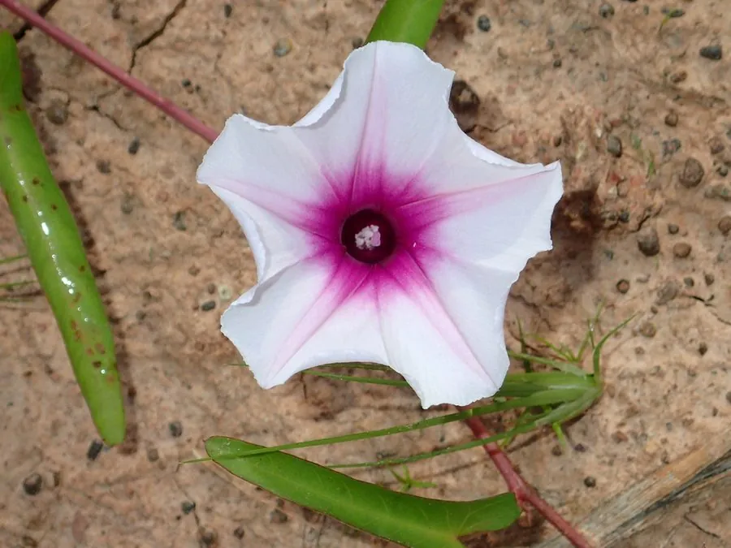

农作物与经济植物 · 植物界
空心菜 Ipomoea aquatica

空心菜的茎中空、生长迅速，可炒食和煮汤，是夏季最常见的绿叶蔬菜之一，水陆两地均可栽培。
- 分类
- 门被子植物门纲双子叶植物纲目茄目科旋花科属番薯属
- 栖息环境
- 高温湿润的水田或湿地，耐热性强，不耐寒
- 地理分布
- 原产中国南方与东南亚，现亚洲各地广泛栽培
- 保护级别
- 暂无评估（栽培作物）
物种志
空心菜是旋花科一年生或多年生草本，茎蔓生或匍匐，中空、有节，节上易生不定根。叶片互生，披针形或卵形，全缘，叶柄长。花漏斗状，白色或淡紫色，形似牵牛花。蒴果球形，内含 4 粒种子。空心菜分水生和旱生两类，水生产量更高。
空心菜原产中国南方与东南亚，是夏季重要的绿叶蔬菜，栽培历史悠久。它喜高温湿润、光照充足，耐热性强，不耐寒，适宜在水田或湿润的旱地种植，生长快、可多次采收。嫩茎叶可炒食、煮汤、凉拌，口感脆嫩；富含维生素、膳食纤维和钙。空心菜在南方夏季生长旺盛，是“三伏天”的当家菜。栽培时注意保持水肥充足，及时采收，促进分枝。
形态与习性
- 茎中空有节，可生不定根
- 叶披针形或卵形
- 花漏斗状，白或淡紫色
- 栽培分水生与旱生两类
- 用途炒食、煮汤、凉拌
趣味知识
- 空心菜的茎中空，因此得名，节上还能长出不定根。
- 空心菜分水生和旱生两类，水生产量更高。
- 空心菜耐热不耐寒，是南方夏季的当家绿叶菜。